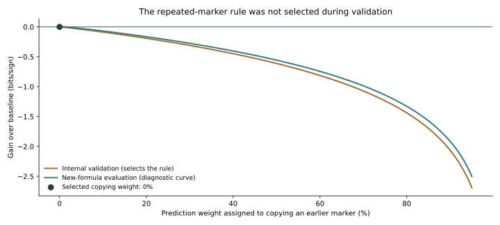

Does Elamite-style agreement help predict Indus writing?
22 November 2026 · Raw sign sequences; no Dravidian words, proposed translations or dictionary-affinity scores.
This particular written-agreement model gained no selected predictive rule. It was fitted on 1,373 distinct Lipi formulas and evaluated on 183 New formulas absent from Lipi. Internal validation chose zero weight for copying an earlier grammatical marker, so the final predictor is identical to its no-copy baseline.
The actual linguistic prediction
Elamite noun phrases can repeat a grammatical class ending on linked words. A published example is nap-(i)r u-r, “my god.” If an Indus writing system sometimes represented such agreement with an independent recurring marker, an earlier marker should help predict the later one.
stem A – marker s – stem B – marker s
The letters are placeholders, not translations of Indus signs. The algorithm searches for repeatable marker positions without assuming any noun means house, king, tax or star. No marker is assigned the Elamite sound r/p/k.
This is a conditional writing model, not a complete Elamite decipherment. Elamite agreement can be omitted or written with different spellings. Other languages also have agreement. A negative result cannot eliminate every Elamite model, and a positive one would not uniquely identify Elamite.
Training and evaluation
The 1,373 Lipi formulas split into 1,109 inner-training and 264 validation formulas. Fifty-five candidate suffix signs are selected by frequency in inner training. The baseline predicts signs using length, interior/final position, object type and the immediately preceding sign. One extra coefficient controls copying an earlier marker. It is fixed before evaluating New formulas.
Only sequences with at least four numeric-ID signs and no 000/ALT/X damage codes are admitted. That is a transcription filter, not proof of physical completeness. Duplicate formulas count once; six New formulas also seen in Lipi are excluded. These data existed in the repo: 183 means distinct test patterns, not 183 newly excavated objects or independently blind archaeological observations.
Results
The primary direction is as stored; reversed order is a diagnostic. Zero gain follows mathematically from choosing zero copying weight. It is not 183 separate rejections. The narrow finding is that the additional rule failed to improve validation enough to be selected.

These full-grid curves were added after seeing the zero coefficient and are diagnostic only. At 0.5% the primary test curve has a tiny positive 0.00287-bit gain while validation is negative. That test-set optimum was not promoted. At 5%, validation and test gains are −0.0402 and −0.0268 bits/sign. Every grid point is downloadable.
Could a smaller set of marker signs work?
An exploratory refinement lets Lipi validation choose at most six marker signs and their copying weight, then freezes them before evaluating New. It selects only sign407 from one validation opportunity. The test set contains zero eligible opportunities for that chosen rule. This is an unsupported single-case lead, not a successful Elamite reading. Selection steps and every prediction are retained. This refinement was designed after viewing the first model's results and is not an independently preregistered confirmation.
Every admissible repeated marker in the primary test
For example, 095–740–176–740–090 repeats 740 after different preceding signs. That alone does not establish that 740 is a grammatical suffix or give the inscription an Elamite translation.
Could agreement be written inside a modified sign?
A separate check uses nine published-in-repo graphical decompositions explicitly describing four-small-stroke/line cages, compared across different graphic base families. It admits neither generic brackets nor four-pair enclosures.
There are no marked test pairs, so this representation cannot be evaluated as a confirmation or refutation. No significance claim is made.
What this changes
We now have a direct test of one Elamite-compatible written mechanism against the actual Indus sequences. It gives no positive support for that representation. It has not produced a reading or decided the Indus language. Existing dictionary, grammar-order, QAP and Linear-Elamite transfer experiments are credited rather than repeated as new results.
Interpretation, sources and reproduction · Summary · Every formula and object key · Every primary prediction · Reversed predictions · Every coefficient · Admitted graphical rows
Basello: primary Elamite grammar source, printed28 · Stolper: grammar source, pp.73–74